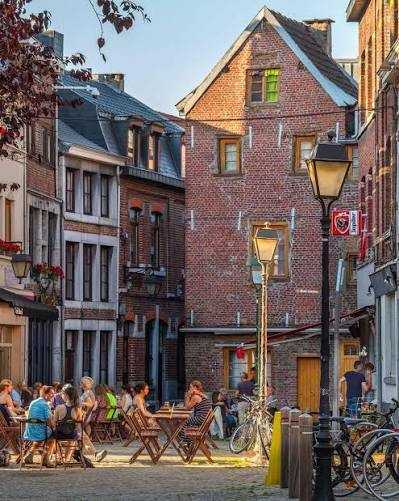

CityLoop Quest Liège


Le centre historique concentre le pouvoir ancien : Saint-Lambert, le palais, la place du Marché, le Perron et les rues proches. On y sent une Liège institutionnelle, commerçante, parfois solennelle, mais jamais totalement figée tant les cafés et les passants réactivent l’espace.
Hors-Château et les Coteaux donnent une atmosphère plus secrète. Les escaliers, les murs, les impasses et les jardins ouvrent une ville verticale, presque villageoise, qui contraste avec le tumulte des quais. C’est un secteur idéal pour comprendre le relief liégeois.
Outremeuse possède son propre accent. L’île garde une mémoire populaire forte, associée aux marionnettes, aux fêtes d’août, aux rues plus modestes et aux sociabilités de quartier. Traverser la Meuse suffit parfois à changer de cadence.
Guillemins, Boverie, Avroy et Longdoz racontent une Liège plus moderne, liée aux transports, aux parcs, aux musées et aux anciennes industries. La ville n’a pas un seul centre émotionnel : elle fonctionne par foyers, et c’est ce qui rend la visite plus riche qu’un simple aller-retour monumental.